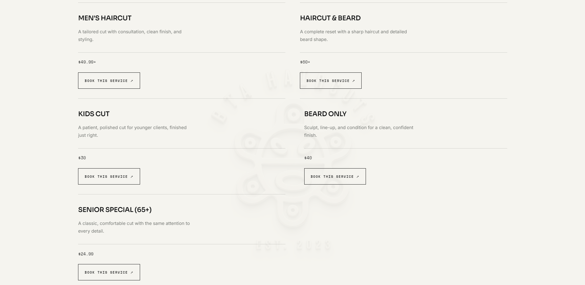
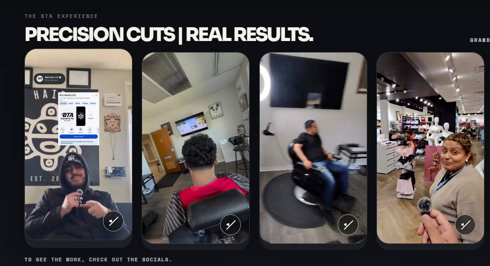

Welcome to My Portfolio
This is a showcase of my work and skills with starting with HTML basics.
About Me
I am an Information Science student interested in technology, cybersecurity, and health informatics.
I enjoy working on projects that allow me to use my technology skills to solve real world problems. I am always looking for new opportunities to learn and grow as a developer.
I am curretly looking to apply for a masters in health informatics. With this degree, I hope to gain the skills and knowledge necessary to make a positive impact in the healthcare industry. I am passionate about using technology to improve patient care and outcomes, and I believe that health informatics is the perfect field for me to pursue my goals.
Persuing Health informatics is a great bridge for my Cybersecurity interest as well as hospitals are the most attacked by cybercriminals. I hope to use my knowledge of cybersecurity to help protect patient data and ensure that healthcare organizations are able to provide the best possible care and data protection for their patients.
Projects
I am currently developing new projects related to cybersecurity, health informatics, and web development. They will be added here as I continue building my skills!
Current Projects
Bta Website
This is a simple website for a local business to increase their online presence.


Contact/Connect
Feel free to reach out to me and follow along with my future projects!
Visit GitHub Visit LinkedIn